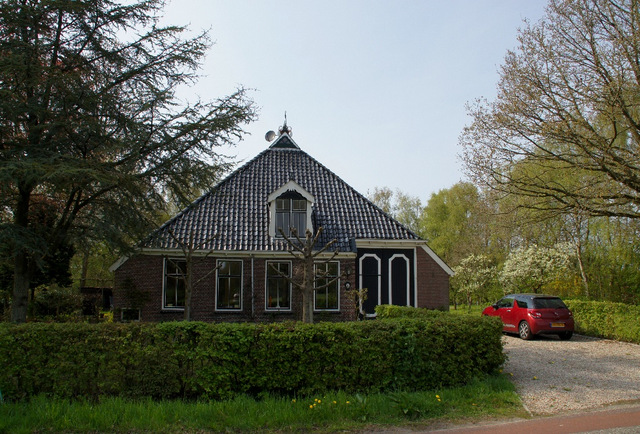

Home

Nijemirdum in Friesland is not the center of the world, but here is my studio and through the internet I discovered the world of creative coding.
For me creative coding brings two worlds together; ICT and Art. I worked 14 years at a software company and after that period I went a year to art-school in Groningen.
I started with creative coding in javascript.
Then I discovered Processing and P5 and I was lost. I enjoy making art with code and everytime I surprise myself with the results.
I hope you will enjoy it too on this site.
I think the computer is a great tool for creating art or creative things, what ever...